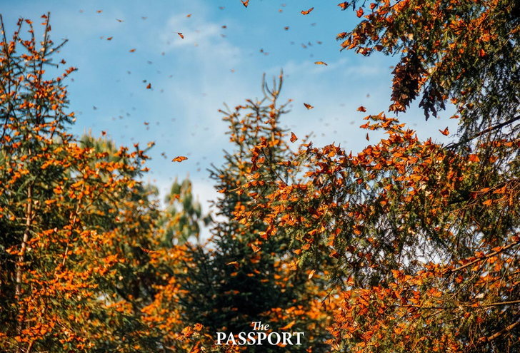

Online Reservation System
7. ไทย
|
หมู่เกาะมากมายทั้งด้านชายฝั่งตะวันออกและฝั่งอันดามันของไทย มีความงดงามมากเพียงพอจะเพิ่มคะแนนให้ประเทศไทยมาถึงอันดับที่ 7
ได้ไม่ยากเย็นอะไร แต่ใช่ว่าจะมีแค่ชายฝั่งเท่านั้น เพราะพื้นที่อื่น ๆ ก็ยังมีอุทยานแห่งชาติ เช่น เขตรักษาพันธุ์สัตว์ป่าทุ่งใหญ่-ห้วยขาแข้ง
ซึ่งเป็นบ้านของช้างและเสือ ให้นักท่องเที่ยวได้เข้าไปสัมผัสกับความอุดมสมบูรณ์ของผืนป่าสีเขียว
6. ออสเตรเลีย
|
ถึงแม้จะอยู่ในอันดับที่ 6 แต่ออสเตรเลียก็มีตั้งแต่แนวปะการังที่ใหญ่ที่สุดของโลกอย่าง The Great Barrier Reef
บนชายฝั่งตะวันออกไปจนถึงชายฝั่ง Ningaloo ของชายฝั่งตะวันตก มีอุทยานแห่งชาติ Kakadu ที่ดังจากภาพยนตร์เรื่อง Crocodile Dundee
ทางตอนเหนือ มาจรดพื้นที่เว้งว้างบนเกาะแทสเมเนียทางตอนใต้สุดของประเทศ เรียกว่ามีสถานที่น่าทึ่งอยู่ในทุกมุมของประเทศจริง ๆ
5. จีน
|
ในฐานะประเทศที่ใหญ่เป็นอันดับสี่ของโลก จีนจึงครอบครองสินทรัพย์ทางธรรมชาติไว้มากมาย ไฮไลต์บางส่วนที่มีชื่อเสียงระดับโลกก็อย่างเช่น
แม่น้ำสามสายในยูนนาน และหุบเขาหวงหลง โดยมีน้ำพุร้อนเป็นทางสู่ผืนป่าที่มีภูเขาเป็นฉากหลัง รวมถึงเขตรักษาพันธุ์แพนด้ายักษ์เสฉวนซึ่งเป็นที่อยู่ของแพนด้าที่ใกล้สูญพันธุ์ประมาณหนึ่งในสามของโลก
4. เปรู
|
เปรูมีซากอารยธรรมโบราณของชาวอินคาอย่าง มาชูปิกชู มาคอยดึงดูดนักท่องเที่ยวให้เดินป่าเข้าไปสำรวจ แต่นอกเหนือจากนี้ เปรูยังมีภูเขา Huascarán
ซึ่งอยู่ในเทือกเขาเขตร้อนที่สูงที่สุดในโลก และอุทยานแห่งชาติ Rio Abiseo ซึ่งเป็นที่ตั้งของแหล่งโบราณคดีอีก 36 แห่ง จึงไม่แปลกที่เปรูจะอยู่ในอันดับต้น ๆ
3. คอสตาริกา
|
ถ้าพูดถึงสถานที่ท่องเที่ยวทางธรรมชาติแล้วล่ะก็ ประเทศเล็ก ๆ แห่งนี้มักติดอันดับต้น ๆ ในการค้นหาบนอินเตอร์เน็ตเสมอ เพราะมีทั้งอุทยานแห่งชาติเกาะโคโคส
ซึ่งเป็นเกาะแห่งเดียวในมหาสมุทรแปซิฟิกตะวันออกที่มีป่าฝนอุดมสมบูรณ์ รวมถึงอุทยานแห่งชาติ Tortuguero ซึ่งเป็นที่อยู่ของเต่าทะเลจำนวนมาก
2. เม็กซิโก
|  |
นอกจากซากปรักหักพังของชนเผ่ามายัน Tulum แล้ว เม็กซิโกก็ยังมีป่าฝนเขตร้อน บึง และป่าชายเลนให้ได้ชื่นชมอยู่ภายในเขตสงวนชีวมณฑล Sian Ka'an
และกลุ่มเกาะภูเขาไฟที่ Revillagigedo ก็ควรค่าแค่การเยี่ยมชม เม็กซิโกยังมีสัตว์ป่ามากมายอย่างเช่นในเขตรักษาพันธุ์วาฬแห่ง El Vizcaino
และเขตสงวนชีวมณฑลผีเสื้อ (Monarch Butterfly Biosphere Reserve)
1.บราซิล
|
บราซิลอยู่ในจุดสูงสุดของลิสต์ด้วยทรัพยากรธรรมชาติมากที่สุดและหลากหลายที่สุดในโลก จากเขตสงวนทางตะวันออกเฉียงใต้ของป่าแอตแลนติกประกอบด้วยพื้นที่คุ้มครองทั้งหมด 25 แห่ง
ซึ่เป็นบ้านของเสือจากัวร์ ลิงแมงมุมขนยาว และสัตว์จำพวกแมวป่า ไปจนถึงป่าแอมะซอนที่ได้รับการขนานนามว่าเป็นปอดของโลกไปหน้าAbout-Me!